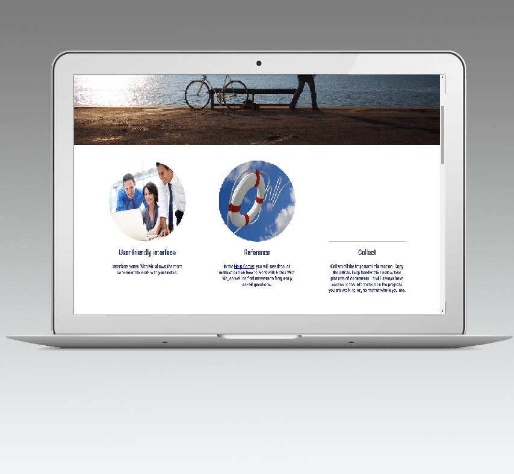

Interface Notes With Me allows the most convenient to work with your notes.
Reference
In the Help Center, you will see detailed instructions on how to work with Notes With Me, as well as find answers to frequently asked questions.
Collect
Collect all the important information. Copy the article, keep handwritten notes, take pictures of documents - it will always have access to the information on the projects you are working on, no matter where you are.
Notes with me
Join to us now and you never will forget nothing.
Applications for mobile
Notes With Me is available to you on any device. Install the application and use all the basic functions of Gmail on their smartphone or tablet.

Universal workspace
Whatever you are doing, Notes With Me offers a comfortable environment for the task..
Write
Are you writing short notes or to manage large projects, Evernote helps you to focus and go all the way from the idea to its realization.
Notes with me
You can be everywhere, but your notes will always be with you.